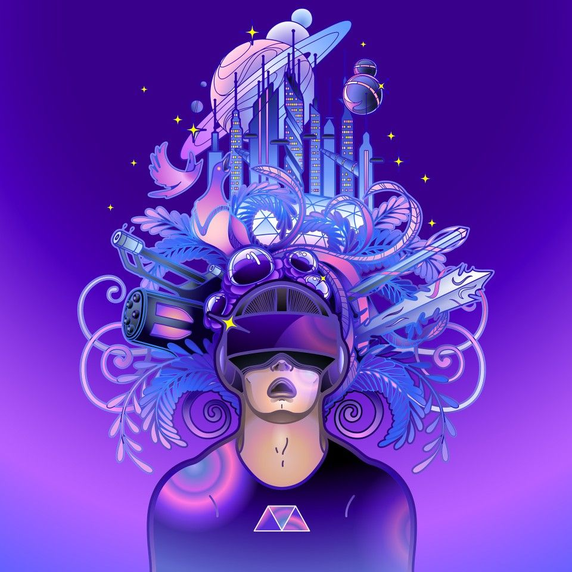

Essa seção é dedicada para a explicação e divulgação da tecnologia de realidade aumentada...
A realidade aumentada é um cenário de imersão criado através de ferramentas computacionais em que o usuário realiza determinadas tarefas, como por exemplo vemos no jogo Pokémon GO. A realidade aumentada designa a interação entre ambientes virtuais e o mundo físico.
Através do jogo instalado em tablets ou celulares com conexão à internet, é possível ter acesso a um espécie de mundo virtual, que indica os locais aos quais os "treinadores pokémon" devem ir e, ao chegar, mostrar um local com pontos artísticos ou históricos, os chamados Pokestops, como opção de ginásio, onde outros jogadores se encontram e disputam o território no jogo. Diante disto, não é necessário ir muito longe para imaginar porque a realidade aumentada está tão em alta atualmente.
Metaverso é um ambiente virtual de realidade aumentada. Eesse espaço pretende revolucionar a forma que conhecemos a internet hoje em dia, experimentando o ambiente virtual como uma extensão do mundo real.
O metaverso ainda está em desenvolvimento por grandes empresas de tecnologia, como a Meta e a Microsoft. No entanto, já é possível ter experiências do Metaverso em várias plataformas, especialmente as de jogos online.
Durante as últimas semanas de novembro, eu fui convidado para participar do "Conecta Escola Senac no Metaverso". Tendo em vista a tendência no mundo do trabalho, o Senac busca neste evento mostrar o que há de mais moderno neste novo espaço coletivo e compartilhado, as práticas empregadas neste universo e os desafios que os profissionais já têm encontrado na divulgação de produtos e serviços.
